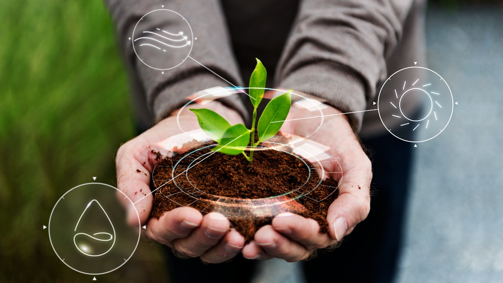
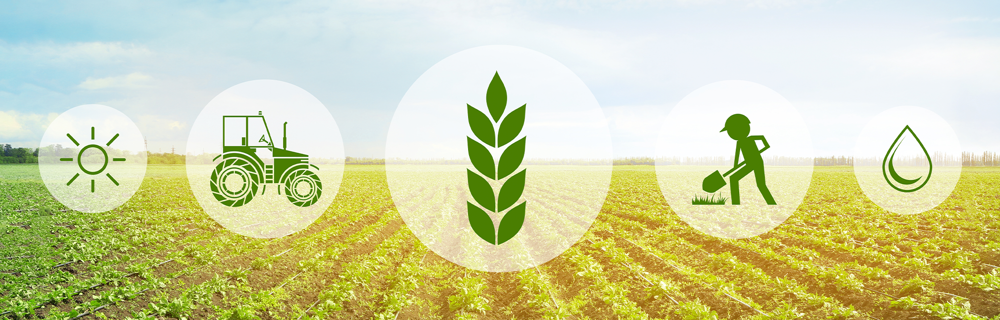

Agricultura Sustentável: Cultivando um Futuro Resiliente e Equilibrado
Conceitos Básicos
Os princípios e as características da agricultura sustentável são: A diminuição de adubos químicos, através da técnica da fixação biológica de nitrogênio. O uso de técnicas em que não ocorra a poluição do ar, do solo e da água. A prática da agricultura orgânica, pois esta não utiliza pesticidas e adubos químicos.

Exemplos de práticas agrícolas sustentáveis
Utilizar mais pesticidas naturais e menos produtos químicos que contaminam o solo, ar e água para o controle de pragas. Reaproveitamento de materiais, como por exemplo, criando sistemas que utilizem a água das chuvas para irrigação ou até mesmo utilizando containers marítimos como armazém de produtos.
